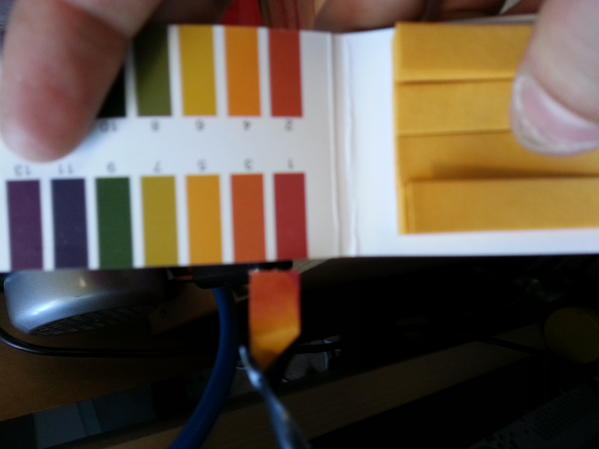

Out of thin Air
Back in 2012 there where uncertainties of how available nitrates would be to the armature chemist.
For reasons, potassium-nitrate was no longer over the counter, would calsium-nitrate go next?
How are you going to coat "all the things!" in silver without nitric acid to make your silver nitrate
Luckly Henry Cavendish made in 1784 the observation, that a high voltage discharge would sometimes
produce nitric oxide. Further developments in arch controll was made by Julius Plücker.
But the inducrial process we know today, was developed by Kristian Birkeland and Sam Eyde.
The process in itself is rather simple. The air around us contain both Oxygen and Nitrogen
When we talk about a nitrate we refere to NO3-, nitric acid would be HNO3.
As you can see the air around us is almost a nitrate by itself.
If only there was a way to make the diatomic N2 gas, loosen that pesky triple bond.
Well, as it turns out, about 5kV and 3000C will do the trick.
Under these conditions diatomic Nitrogen splits, and is free to react with Oxygen.
Forming Nitric Oxide. The Nitric Oxide quickly reacts with more oxygen,
and forms Nitrogen DiOxide, NO2.
The NO2 is then bubbled through water, forming nitric acid, HNO3.
This is the process, but in my first attempt I used a 555 based fly-back as
a high voltage source. This failed to deliver the necessary temperatures,
and didn't give any change to the pH of the reciver.
Round two, the 555, was swaped for a ZVS. These will dump alot more power into your
flyback, but it also like to push the magic smoke out of the driving transistors,
and is a firm beliver in short working hours.
This time around, ther was some positive results, the pH was clearly indicating
that it was highly acidic. But titration reveiled a rather abysmal amount of HNO3.
And this was the point where I actuall did the calculation, to see how much I should expect.
And got a sharp reminder why you always do the calculations first, and don't skim past
the section of a paper that deals with the power requirements..
30g of HNO3 per kWh is the industrial standard, at home it's more like 3g/kWh.
Luckly Ca(NO3)2 never went out of sale.
Still there is a part of me that would like to be self-sufficient nitrate wise,
And some preliminary experiments, based around a little known process that predates
Birkeland-Eyde has yielded some "peaty" neat results. More to come!